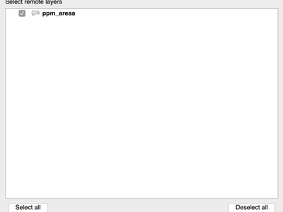

Log met wijzigingen voor QGIS 2.18¶

Dit is de laatste uitgave in de reeks 2.x. De huidige Long Term Release (LTR) blijft versie 2.14.x. Deze uitgave bevat aanvullende verbeteringen bovenop onze eerdere uitgave. De meeste activiteiten zijn momenteel gericht op de ontwikkeling van QGIS 3.0, wat onze volgende generatie uitgaven is, die staat gepland voor het einde van het eerste kwartaal van 2017.
Dankwoord
We would like to thank the developers, documenters, testers and all the many folks out there who volunteer their time and effort (or fund people to do so). From the QGIS community we hope you enjoy this release! If you wish to donate time, money or otherwise get involved in making QGIS more awesome, please wander along to qgis.org and lend a hand!
QGIS is supported by donors and sponsors. A current list of donors who have made financial contributions large and small to the project can be seen on our donors list. If you would like to become and official project sponsor, please visit our sponsorship page for details. Sponsoring QGIS helps us to fund our six monthly developer meetings, maintain project infrastructure and fund bug fixing efforts. A complete list of current sponsors is provided below - our very great thank you to all of our sponsors!
QGIS is gratis software en u bent niet verplicht om maar iets te betalen voor het gebruiken ervan - in feite willen we mensen, wijd en zijd verspreid, aanmoedigen om het te gebruiken ongeacht uw financiële of sociale status - wij geloven dat het uitrusten van mensen met gereedschappen voor het maken van ruimtelijke beslissingen zal resulteren in een betere wereld voor de gehele mensheid.
- Sponsoren voor QGIS versie 2.18.0
- Algemeen
- Symbologie
- Labelen
- Renderen
- Gegevensbeheer
- Formulieren en widgets
- Printvormgeving
- Processing
- Mogelijkheid: Algoritme Punt op oppervlak
- Mogelijkheid: Processing algoritme Dissolve accepteert meerdere velden
- Mogelijkheid: Geoptimaliseerd algoritme Clip voor Processing
- Mogelijkheid: Algoritme voor begrenzingsvakken
- Mogeljkheid: Algoritme Samenvoegen verbonden lijnen
- Mogelijkheid: Algoritme Rand van geometry
- Gegevensproviders
- QGIS Server
- Plug-ins
- Programmeerbaarheid
- Mogelijkheid: Nieuwe klassen voor PyQGIS in 2.18
- Mogelijkheid: Nieuwe functies voor expressies
Sponsoren voor QGIS versie 2.18.0¶
Elk jaar ontvangen wij ook ondersteuning van verschillende organisaties die het werk wat wij doen waarderen en die het mogelijk willen maken dat de ontwikkeling van het QGIS project vooral blijft doorgaan. Deze sponsoren, genoemd in onderstaande lijst, zijn wij zeer dankbaar!
  QGIS Usergroup Switzerland, Zwitserland QGIS Usergroup Switzerland, Zwitserland |
 Staat Vorarlberg, Oostenrijk Staat Vorarlberg, Oostenrijk |
| Office of Public Works, Ierland, Ierland |
 GAIA mbh, Duitsland GAIA mbh, Duitsland |
 Sourcepole AG, Zwitserland Sourcepole AG, Zwitserland |
 QGIS user group Germany, Duitsland QGIS user group Germany, Duitsland |
|
|
|
|
|
|
|
|
|
|
|
|
|
|
|
|
|
SOLTIG (Soluciones en Tecnologías de Información Geográfica) |
|
|
|
|
|
|
|
|
|
|
|
|


{kind=link}
Algemeen¶
Mogelijkheid: Automatische links in Identificatieresultaten¶
Elke link http of mailto in waarden van attributen zullen nu automatisch worden geconverteerd naar aan te klikken koppelingen binnen het paneel Identificatieresultaten.

Deze mogelijkheid werd ontwikkeld door Sandro Mani (Sourcepole)
Mogelijkheid: Muiswiel boven schuifbalken dialoogvensters Kleuren¶
In QGIS 2.18 kunt u nu met het muiswiel scrollen over elke schuifbalk in het dialoogvenster Kleur kiezen om de waarde in kleine stapjes te verhogen. Dit is een handige sneltoets voor kleine aanpassingen aan kleurcomponenten.

Deze mogelijkheid werd mogelijk gemaakt door: Nyall Dawson (North Road)
Deze mogelijkheid werd ontwikkeld door: Nyall Dawson (North Road)
Symbologie¶
Mogelijkheid: Kleuren kiezen is nu ingebed in het paneel Laagstijlen¶
In QGIS 2.18 zorgt het klikken op een knop in het paneel Stijl van de laag er voor dat het dialoogvenster Kleur kiezen wordt geopend binnen het paneel Stijl zelf in plaats van als een zelfstandig dialoogvenster. Dit maakt het mogelijk de kleuren interactief aan te passen met een direct voorbeeld van het resultaat.

Deze mogelijkheid werd mogelijk gemaakt door: North Road
Deze mogelijkheid werd ontwikkeld door: Nyall Dawson (North Road)
Labelen¶
Mogelijkheid: Ondersteuning voor labelen met lijst voor vervanging¶
Voegt de mogelijkheid toe om een lijst te specificeren met vervangende teksten om toe te passen op de tekst van het label. Bijv. afkortingen van typen straat.
Gebruikers kunnen lijsten met vervangingen ex- en importeren om hergebruik en delen eenvoudiger te maken.

Deze mogelijkheid werd mogelijk gemaakt door: North Road
Deze mogelijkheid werd ontwikkeld door: Nyall Dawson (North Road)
Mogelijkheid: Verbeterd algoritme voor plaatsen van lijnlabels¶
De modus parallel labelen voor lijnlagen is enorm verbeterd, met een nieuw algoritme dat het plaatsen van labels op puntige delen van geometrieën van objecten voorkomt.

Deze mogelijkheid werd mogelijk gemaakt door Andreas Neumann
Deze mogelijkheid werd ontwikkeld door: Nyall Dawson (North Road)
Mogelijkheid: Polygonen labelen met behulp van gebogen labels langs de omtrek¶
Dit voegt een nieuwe modus voor het labelen van polygonen toe waar de omtrek van de polygoon wordt gelabeld met behulp van gebogen labels.

Deze mogelijkheid werd mogelijk gemaakt door: North Road
Deze mogelijkheid werd ontwikkeld door: Nyall Dawson (North Road)
Renderen¶
Mogelijkheid: Voorbeeld van rastertegels (WMTS- en XYZ-lagen)¶
In eerdere versies van QGIS moesten gebruikers wachten tot het downloaden van alle tegels voor een laag was voltooid om de resulterende kaart te kunnen bekijken. Dit is nu verholpen en de tegels worden onmiddellijk in het kaartvenster weergegeven als zij worden gedownload, wat de ervaring van de gebruiker enorm verbeterd door het verlagen van de tijdsduur waarmee iets wordt weergegeven. Beter nog, eerder gedownloade tegels met lagere of hogere resoluties kunnen worden gebruikt voor de functionaliteit van het voorbeeld in de gebieden waar de tegels met de juiste resolutie nog niet zijn gedownload.

Dit werd mogelijk gemaakt door Land Information Nieuw Zeeland
Deze mogelijkheid werd ontwikkeld door Martin Dobias (Lutra Consulting)
Mogelijkheid: Te annuleren renderen van rasters (WMS-, WMTS-, WCS- en XYZ-lagen)¶
Deze verbetering verhoogt de gebruikerservaring bij het werken met rasterlagen die afkomstig zijn van servers op afstand. Eerder moest men wachten tot de downloads volledig waren voltooid om opnieuw of de kaart in te kunnen zoomen of die te verplaatsen, omdat de gebruikersinterface tussentijds zou zijn bevroren. Dit is nu verholpen dor het feit dat het renderen van rasterlagen op elk moment kan worden geannuleerd.
Dit werd mogelijk gemaakt door Land Information Nieuw Zeeland
Deze mogelijkheid werd ontwikkeld door Martin Dobias (Lutra Consulting)
Gegevensbeheer¶
Mogelijkheid: Vlag toevoegen om alleen geselecteerde objecten te kopiëren¶
De Plug-in Offline bewerken is een standaard plug-in die in QGIS is ingebouwd en u in staat stelt om offline een gegevensset op afstand (bijv. uit een database), in het veld te bewerken en dan die, terug in uw kantoor, opnieuw te synchroniseren. Dit vergroot de mogelijkheden voor het offline bewerken door alleen te werken met een subset van grote lagen.

Deze mogelijkheid werd mogelijk gemaakt door DB Fahrwegdienste GmbH
Deze mogelijkheid werd ontwikkeld door Matthias Kuhn (OPENGIS.ch)
Formulieren en widgets¶
Mogelijkheid: Beheren van labels voor individuele widgets Bewerken toestaan¶
Beheren van labels voor individuele widgets Bewerken in een formulier toestaan. In de ontwerper Slepen en neerzetten zal een dubbelklik op een item het mogelijk maken om te beheren of het label voor elk individueel item zou moeten worden weergegeven.
In aanvulling daarop is het mogelijk te configureren of de knoppen koppelen/ontkoppelen worden weergegeven in widget Relatie-verwijzing, wat nuttig is om relaties 1:n te verbergen waar een kind niet kan bestaan zonder zijn ouders.
Dit werd mogelijk gemaakt door Kanton Zug, GIS-Fachstelle
Deze mogelijkheid werd ontwikkeld door Matthias Kuhn (OPENGIS.ch)
Mogelijkheid: Conditionele zichtbaarheid voor tabs en groepsvakken¶
Dit voegt een nieuwe optie voor configureren toe om tabs en groepsvakken onder voorwaarden weer te geven of te verbergen in formulieren van de ontwerper Slepen en neerzetten.
Configureren wordt gedaan door dubbel te klikken in de boom van de ontwerper in de interface voor het configureren van de velden.
Een expressie kan worden ingevoerd om de zichtbaarheid te beheren. De expressie zal opnieuw worden geëvalueerd elke keer als waarden in het formulier worden gewijzigd en zal de tab of groepsvak overeenkomstig worden weergegeven/verborgen.

Deze mogelijkheid werd ontwikkeld door Matthias Kuhn (OPENGIS.ch)
Mogelijkheid: Standaard veldwaarden aan kant van de cliënt¶
Maakt het mogelijk een expressie in te stellen voor een veld van een vectorlaag dat wordt gebruikt om de standaardwaarde van dat veld te evalueren. Expressies voor standaardwaarden kan eigenschappen gebruiken van het object dat bestaat op het moment van aanroepen, zoals gedigitaliseerde geometrieën. Variabelen voor de expressie kunnen ook worden gebruikt in expressies voor standaardwaarden, wat het eenvoudig maakt om bijv de naam van een gebruiker in te voeren, de huidige datum en tijd, pad van het project, etc.

Deze mogelijkheid werd mogelijk gemaakt door DB Fahrwegdienste GmbH
Deze mogelijkheid werd ontwikkeld door: Nyall Dawson (North Road)
Printvormgeving¶
Mogelijkheid: Pijlen voor Ware noorden¶
QGIS 2.18 voegt ondersteuning toe voor oriënteren van Noordpijlen naar het Ware noorden in de Printvormgeving. Eerder werden alle pijlen uitgelijnd aan het noorden van het raster, wat niet geschikt is voor regio’s van de polen of niet Noorden boven-projecties (zoals enkele Zuid-Afrikaanse projectiesystemen). Nu kunt u er voor kiezen om de pijlen te oriënteren ofwel ten opzichte van het noorden van het raster of het Ware noorden. Er is ook een optionele hoek voor verschuiving, die kan worden gebruikt om een convergentie voor het raster om te zorgen dat uw pijlen zich oriënteren op het magnetisch noorden!

Dit werd mogelijk gemaakt door Norwegian Polar Institute’s Quantarctica project
Deze mogelijkheid werd ontwikkeld door: Nyall Dawson (North Road)
Processing¶
Mogelijkheid: Algoritme Punt op oppervlak¶
Dit nieuwe algoritme is soortgelijk aan het algoritme centroids, maar waar een zwaartepunt buiten het corresponderende object kan liggen garandeert het algoritme ‘Punt op oppervlak’ een punt te maken dat ligt binnen het corresponderende object polygoon (of het corresponderende object lijn voor lijnlagen raakt).

Deze mogelijkheid werd mogelijk gemaakt door: North Road
Deze mogelijkheid werd ontwikkeld door: Nyall Dawson (North Road)
Mogelijkheid: Processing algoritme Dissolve accepteert meerdere velden¶
Het algoritme Dissolve staat u nu toe om te ontbinden op meer dan één veldwaarde. In eerdere versies van QGIS kan het ontbinden alleen objecten groeperen op één enkele veldwaarde.

Deze mogelijkheid werd mogelijk gemaakt door: North Road
Deze mogelijkheid werd ontwikkeld door: Nyall Dawson (North Road)
Mogelijkheid: Geoptimaliseerd algoritme Clip voor Processing¶
Het algoritme Clip voor Processing is geoptimaliseerd voor veel voorkomende en in gebruik zijnde scenario’s, wat resulteert in dramatische toename van snelheid voor bewerkingen van clippen. Bijvoorbeeld:
Clippen van een laag met wegen met 1 miljoen lijnen tegen 2 polygonen
Clippen van een 5 miljoen puntenlaag met adressen tegen 2 polygonen

Deze mogelijkheid werd mogelijk gemaakt door: North Road
Deze mogelijkheid werd ontwikkeld door: Nyall Dawson (North Road)
Mogelijkheid: Algoritme voor begrenzingsvakken¶
Dit nieuwe algoritme berekent het begrenzingsvak (enveloppe) van elk object in de invoerlaag.

Deze mogelijkheid werd mogelijk gemaakt door: North Road
Deze mogelijkheid werd ontwikkeld door: Nyall Dawson (North Road)
Mogeljkheid: Algoritme Samenvoegen verbonden lijnen¶
Dit algoritme voegt alle verbonden delen van geometrieën MultiLineString samen tot één enkele geometrie LineString. Als enig deel van de ingevoerde geometrieën MultiLineString niet is verbonden, zal de resulterende geometrie een MultiLineString zijn die lijnen bevat die konden worden samengevoegd en alle niet verbonden delen van lijnen.

Deze mogelijkheid werd mogelijk gemaakt door: North Road
Deze mogelijkheid werd ontwikkeld door: Nyall Dawson (North Road)
Mogelijkheid: Algoritme Rand van geometry¶
Dit nieuwe algoritme geeft de sluiting weer van de gecombineerde randen van de geometrieën van de invoer (d.i. de topologische grens van de geometrie). Bijvoorbeeld: een geometrie polygoon zal een rand hebben die bestaat uit de linestrings voor elke ring in de polygoon, en een geometrie lijn zal een rand hebben die bestaat uit de begin- en eindpunten van de lijn. Dit algoritme is alleen geldig voor polygoon- of lijnlagen.

Deze mogelijkheid werd mogelijk gemaakt door: North Road
Deze mogelijkheid werd ontwikkeld door: Nyall Dawson (North Road)
Gegevensproviders¶
Mogelijkheid: Eigen ondersteuning voor XYZ-lagen¶
Rastertegels in de indeling XYZ worden nu vanzelf ondersteund binnen WMS-gegevensproviders, wat gebruikers in staat stelt basiskaarten weer te geven uit andere bronnen zonder nog langer de noodzaak van plug-ins van derde partijen. zoals QuickMapServices of OpenLayer.
Open eenvoudigweg een browser dockwidget om verbindingen naar XYZ-lagen toe te voegen,, zoek naar een item, genaamd “Tile Server (XYZ)” en klik er met rechts op om een pop-upmenu te verkrijgen met de actie “Nieuwe verbinding”. U zult worden gevraagd naar de URL, waarin {x}, {y}, {z} moeten worden vervangen door de feitelijke tegelnummers, overeenkomstig de huidige kaartweergave. Bijvoorbeeld; om de OpenStreetMap basiskaart toe te voegen, kan men deze URL gebruiken: http://c.tile.openstreetmap.org/{z}/{x}/{y}.png
De gegevensprovider ondersteunt ook het coderen van XYZ-tegelnummers naar “quadkeys” die worden gebruikt door Bing. gebruik eenvoudigweg {q} in plaats van {x}, {y} en {z} in de URL.

Deze mogelijkheid werd mogelijk gemaakt door Lutra Consulting
Deze mogelijkheid werd ontwikkeld door Martin Dobias (Lutra Consulting)
QGIS Server¶
Mogelijkheid: De mogelijkheid voor informatie over segmenten van het object geometrie in server¶
Noodzakelijk voor geometrieën die bogen (CircularArc, CompoundCurve, CurvePolygon) bevatten, maar de webcliënt (bijv. QGIS Web Client) kan het weergeven van deze typen geometrie niet afhandelen.
Deze mogelijkheid kan worden ingeschakeld op de tab “OWS server” in het dialoogvenster “Projecteigenschappen”.

Deze mogelijkheid werd mogelijk gemaakt door Andreas Neumann
Deze mogelijkheid werd ontwikkeld door Marco Hugentobler (Sourcepole)
Plug-ins¶
Mogelijkheid: DB Manager: Mogelijkheid toegevoegd voor bijwerken van SQL-laag¶
Met deze mogelijkheid kan de gebruiker de gegevensbron van de laag bijwerken als dat is gebaseerd op een verzoek van SQL.
Dit werd mogelijk gemaakt door Ifremer
Deze mogelijkheid werd ontwikkeld door 3Liz
Programmeerbaarheid¶
Mogelijkheid: Functie GEOS lineaire verwijzing weergeven voor QgsGeometry¶
Een nieuwe functie QgsGeometry::lineLocatePoint() is toegevoegd voor het ophalen van de afstand langs een linestring naar de dichtstbijzijnde positie op de linestring tot een opgegeven punt.
Deze mogelijkheid werd mogelijk gemaakt door: North Road
Deze mogelijkheid werd ontwikkeld door: Nyall Dawson (North Road)
Mogelijkheid: Nieuwe klassen voor PyQGIS in 2.18¶
Nieuwe bronklassen¶
- QgsAnnotation - an interface for annotation items which are drawn over a map
- QgsFeedback - a base class for feedback objects to be used for cancellation of something running in a worker thread
- QgsOptionalExpression - an expression with an additional enabled flag
Nieuwe klassen voor GUI, opnieuw te gebruiken widgets¶
- QgsExpressionLineEdit - includes a line edit for entering expressions together with a button to open the expression creation dialog. This widget is designed for use in contexts where no layer fields are available for use in an expression and space is constrained.
- QgsTabWidget - similar to QTabWidget but with additional methods to temporarily hide/show tabs
Mogelijkheid: Nieuwe functies voor expressies¶
QGIS 2.18 voegt verscheidene nieuwe functies voor expressies toe, inclusief functies voor interpolatie van hoeken/afstanden.
line_merge: voegt een geometrie MultiLineString samen met verbonden LineStringsboundary: geeft een topologische rand van een geometrie terug, d.i. voor polygonen is dit een MultiLineString die de ringen van de polygoon weergeeftangle_at_vertex: geeft de gemiddelde (bisector) hoek terug voor een geometrie tot een gespecificeerde index van puntendistance_to_vertex: geeft de afstand terug langs de geometrie tot een gespecificeerde index van punten.line_interpolate_angle: berekent de hoek parallel aan de geometrie op een gespecificeerde afstand langs een geometrieline_interpolate_point: geeft een punt op een lijn op afstand terugline_locate_point: geeft de afstand terug langs de lijn naar de dichtstbijzijnde locatie van de lijn die het dichtstbij ligt bij het gespecificeerde punt
Deze mogelijkheid werd mogelijk gemaakt door Andreas Neumann
Deze mogelijkheid werd ontwikkeld door: Nyall Dawson (North Road)